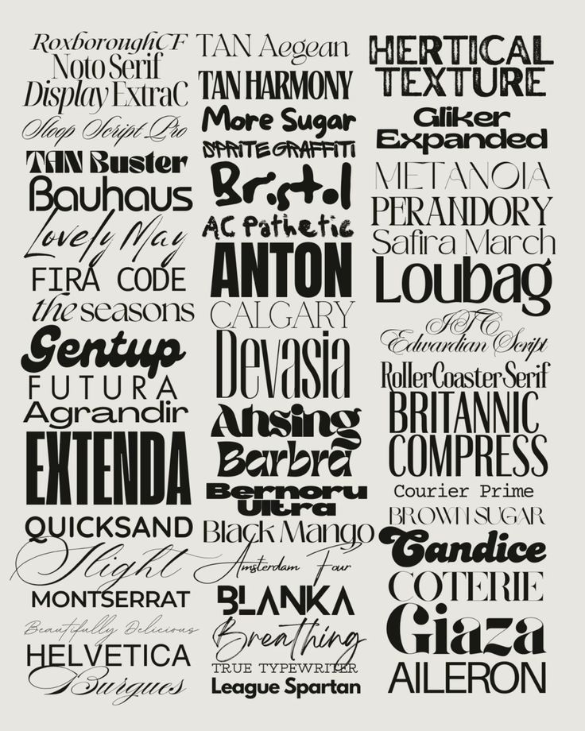

La tipografía conforma uno de los elementos pilares del diseño visual. En sí misma, es un arte que sirve para expresar sensaciones con las formas de letras para diversos estilos de comunicación. Por esto, su utilización siempre será relevante en la creación de tus contenidos, como lo son los colores o las fotografías. Con la tipografía, también puedes generar emociones que influyan en el público receptor de tus mensajes.
Multimedia
Para que sirve
Caracteristicas
La tipografía no solo son letras, sino toda una disciplina encargada del diseño de nuestra escritura. Estas son algunas de las características de esta actividad:
Es transdisciplinaria
Un aspecto a considerar es que la tipografía no es únicamente dibujar letras, sino que implica todo un proceso de diseño que requiere dominio de tradiciones, estilos y tendencias artísticas, así como de un buen conocimiento técnico y digital.
Busca generar símbolos entendibles
Esto puede parecer obvio, pero es bueno recordar que todo ejercicio tipográfico busca generar símbolos entendibles, incluso si es solo para un número reducido de personas. Por ejemplo, si quieres escribir un blog, las tipografías más simples serán tu mejor aliado. Sin embargo, también hay tipografías mucho más complejas (como las caligráficas) que son menos comprensibles para todos, pero que generan un tipo de mensaje específico para quienes dominan su interpretación.
Crea uniformidad de estilo
El ejercicio tipográfico tiene por objetivo crear fuentes y letras que mantengan un estilo común. Intenta escribir un documento con letras diferentes, seguro no se verá bien. Por ello, esta disciplina busca crear identidades gráficas de símbolos que sean útiles para la interpretación de textos, pero también provoquen sensaciones en el lector.
Se basa en la reproductibilidad
Por otro lado, la tipografía pretende formar patrones o reglas de composición que sirvan para reproducir las mismas letras en diferentes formatos.
Ofrece versatilidad
Otra de sus características es que buscan ser versátiles, es decir, que un mismo formato o estilo tipográfico pueda aparecer más grande o más pequeño sin deformarse o eliminar su identidad gráfica. Esto puede verse en las siguientes propiedades:
Tamaño
Anchura
Espaciado
Peso (por ejemplo, cuando una tipografía está en negritas o no)
Inclinación (como en el caso de las cursivas)
Son estas propiedades las que vemos en los tipos o caracteres que utilizamos, gracias al trabajo de diseñadores.

Obra publicada con Licencia Creative Commons Reconocimiento Compartir igual 4.0